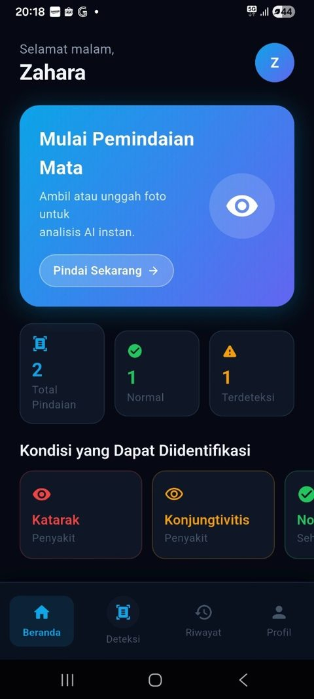
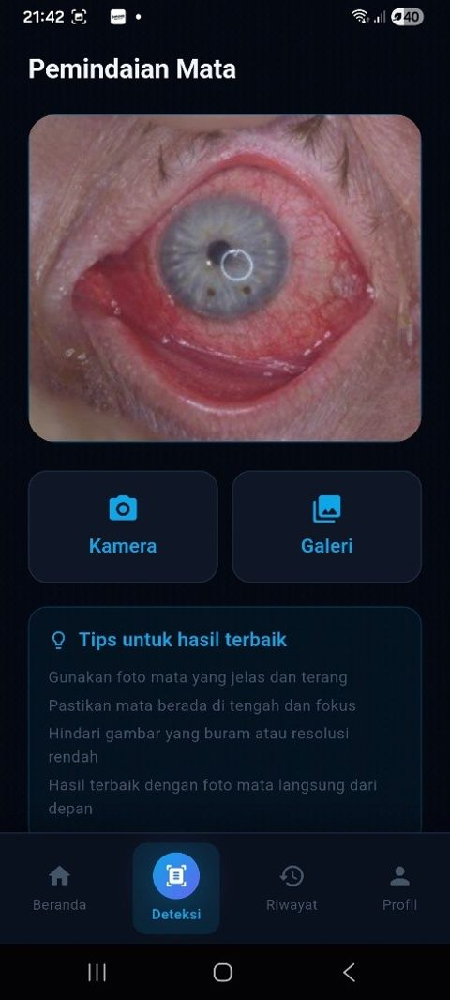
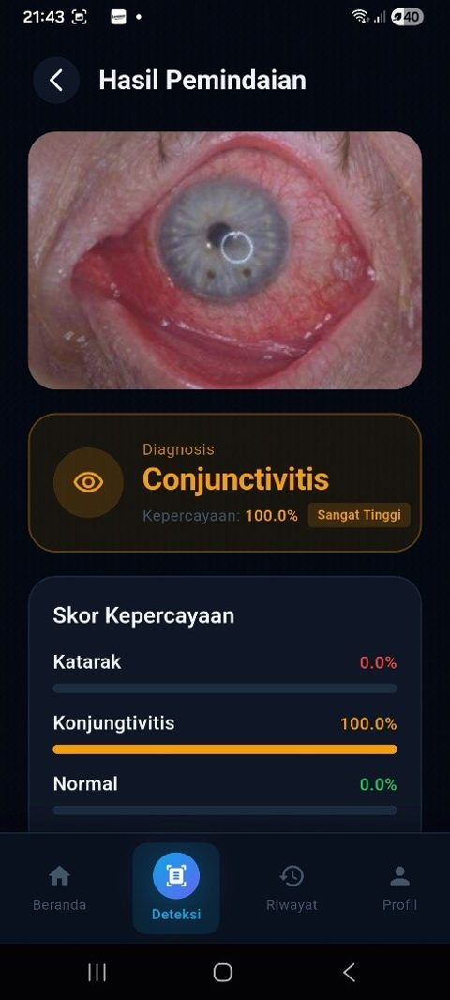
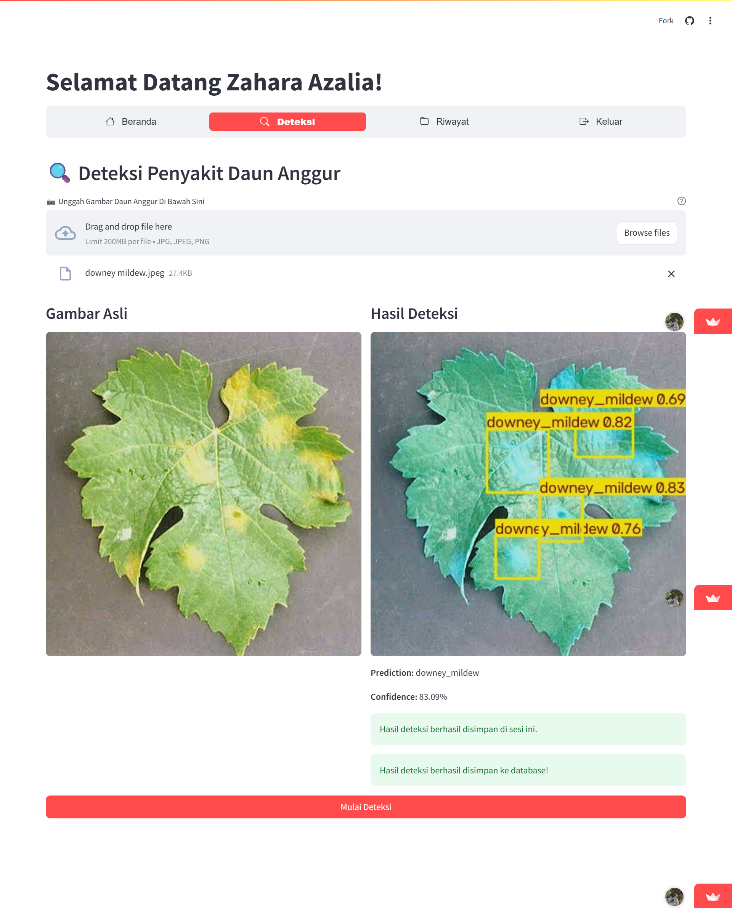
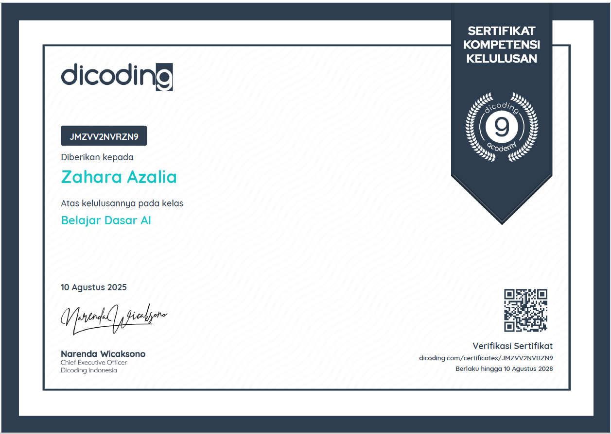
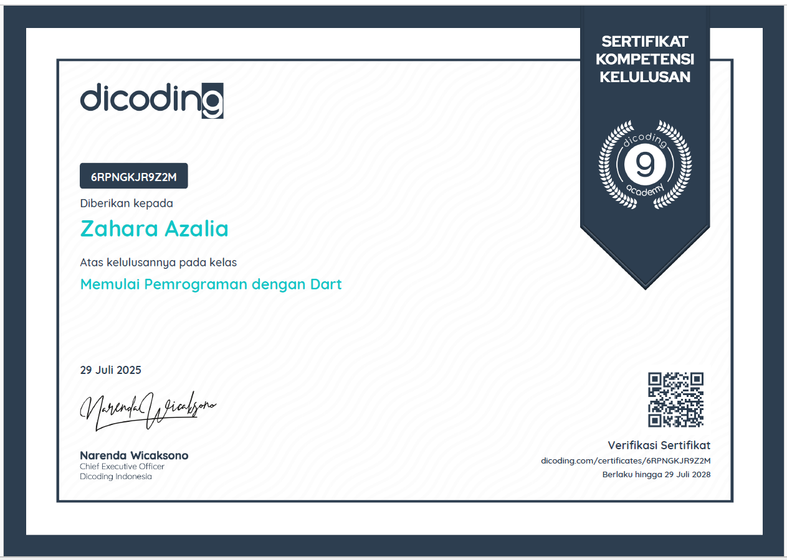
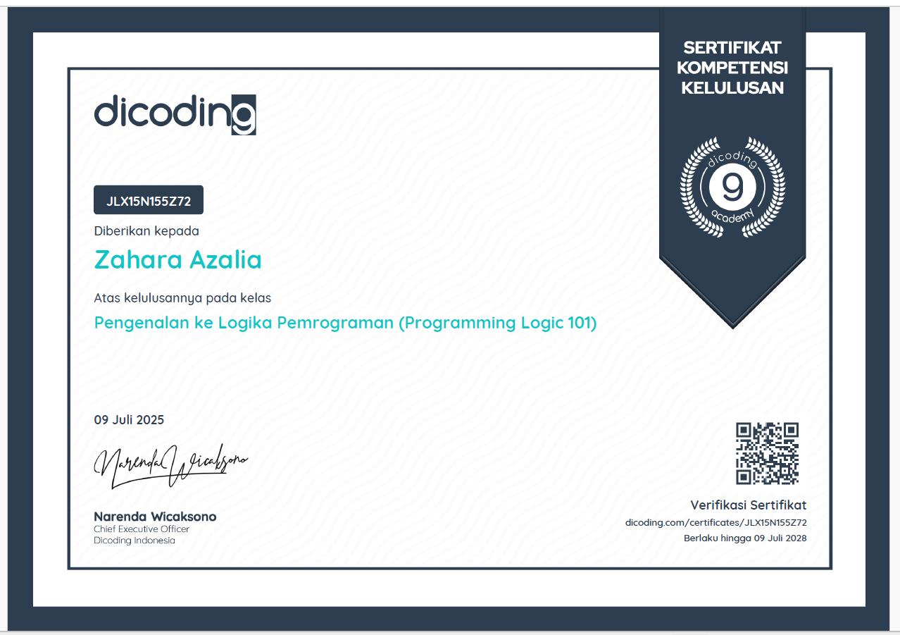
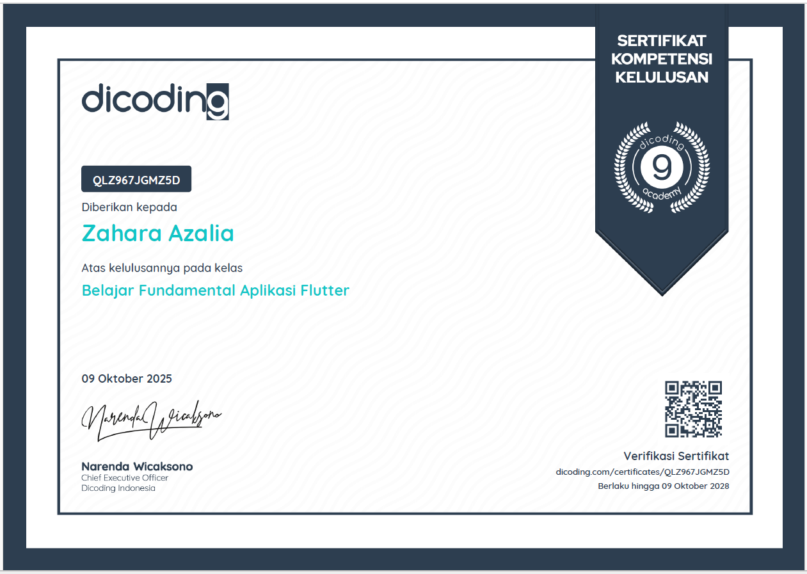
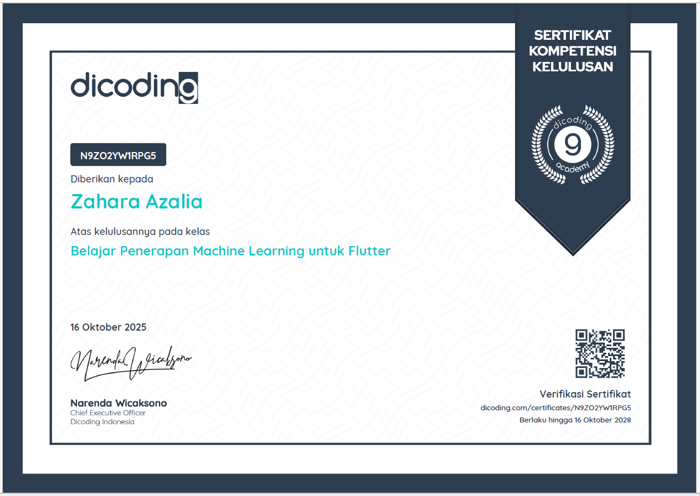

Covering fields such as healthcare, beauty, and agriculture. I focus on transforming complex problems into simple, clean, and user-friendly solutions.

Early detection of eye diseases, no symptoms, no cost.
In remote areas, access to eye doctors is limited and symptoms are hard to detect, leading to delayed awareness of eye diseases.
Aretina analyzes eye photos directly on the phone with MobileNetV2 to classify cataracts, conjunctivitis, or normal conditions as preliminary screening before visiting a healthcare facility.
Runs 100% offline, free, and provides results in seconds.
Preliminary screening tool, not a replacement for doctor's examination.



From photo to results in seconds.
Grape leaf diseases are often detected late, yet early treatment determines harvest outcomes.
A YOLOv12-based detection system with CBAM attention module focuses the model on symptomatic areas of the leaf, then deployed as a web app on Streamlit.
Built with the CRISP-DM methodology, utilizing primary data collected and processed in-house.
Photo label skincare, know the ingredients that are safe and potentially pore-clogging.
Skincare ingredient lists are hard to read: long chemical names, filled with technical terms, and difficult to assess which ones are comedogenic.
Users simply take a photo of the label. The text is read via cloud OCR, matched against a database of ingredients using fuzzy search, and then displayed with comedogenic ratings (0 to 5) and safety status for each ingredient.
Thin-client: the phone only handles the interface, photo capture, and upload. The OCR and ingredient matching processes run in the cloud.
For reference only, not dermatological advice.
Simple, consistent, and easy-to-understand interfaces for general users.
Flutter · Dart · Riverpod / BlocUsed in: Aretina, CuraPureLightweight image classification models that work offline.
MobileNetV2 · On-device inferenceUsed in: AretinaConnecting applications to cloud services, OCR, and search databases.
FastAPI · Supabase · pg_trgm · DioUsed in: CuraPureFrom data collection to object detection model evaluation.
Python · YOLOv12 · CBAM · CRISP-DMUsed in: Deteksi Daun AnggurModels that have been trained are packaged so they can be tested directly by anyone.
Streamlit · DeploymentUsed in: Deteksi Daun AnggurDetermining when computation should be run on the device and when in the cloud.
On-device vs thin-client architectureUsed in: Aretina, CuraPure

Dicoding Indonesia · 2025
Lihat kredensial


Dicoding Indonesia · 2025
Lihat kredensialDicoding Indonesia · 2025
Lihat kredensialI am an Informatics graduate from Gunadarma University, class of 2026. I enjoy building mobile apps, especially as more and more of everyday life moves onto the phone.
My undergraduate thesis, Aretina, is an offline eye disease screening app. Eye conditions are common in Indonesia, yet from what I found, the few apps that exist are paid and require an internet connection. I wanted to build a free one that works anywhere. VitiSense, my grape leaf disease detector, began as a scientific paper and uses primary data I collected from the grapevines on my campus.
I am also building CuraPure, a skincare ingredient scanner with Flutter, FastAPI, and Supabase. Beyond development, I have worked as a project management intern and as an [assistant role]. I am open to mobile and AI development roles, as well as project coordination and administration.
I am open to internship opportunities, project collaborations, and discussions about mobile and AI development.